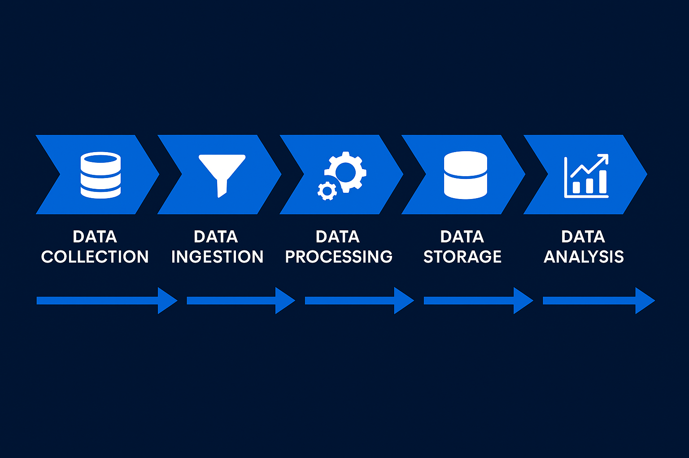

Data Engineering
Cloud ETL, orchestration, data modeling, warehouse flows, infrastructure automation, monitoring, and pipeline reliability.
Python / PySpark / SQL / Airflow / AWS / AzureServices
We help with the technical work and the transition around it: architecture, implementation, communication, quality, adoption, and handover.

Delivery view
The work usually starts with scattered systems and ends with cleaner flows: collection, ingestion, processing, storage, analysis, and the product layer around it.
Core services
Cloud ETL, orchestration, data modeling, warehouse flows, infrastructure automation, monitoring, and pipeline reliability.
Python / PySpark / SQL / Airflow / AWS / AzureForecasting, recommendation, fraud and risk scoring, NLP, synthetic data, model validation, and production deployment.
SageMaker / Azure ML / GenAI / XAI / ValidationDashboards, KPI design, stakeholder reporting, operational analytics, and clearer data products for non-technical users.
Power BI / Metrics / Data Mining / ReportingRoadmaps, architecture reviews, prototype-to-production plans, data ownership, documentation, and handover.
Roadmap / Architecture / Quality / OwnershipWork with operational and enterprise data across healthcare, automotive, insurance, FinTech, SAP, and ERP environments.
SAP / ERP / Healthcare / Automotive / FinTechFor larger scopes, a trusted team can support backend, frontend, UX, QA, integrations, and delivery coordination.
Backend / Frontend / UX / QA / DeliveryBest engagement
The best fit is a project where the desired transition is visible: make the pipeline reliable, make the model deployable, make the reporting trustworthy, make the roadmap clear, or help the team own the system after delivery.